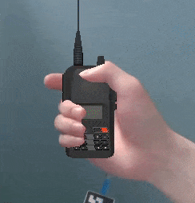
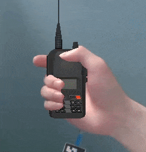

GrabAR: Occlusion-aware Grabbing Virtual Objects in AR
Xiao Tang1, Xiaowei Hu1, Chi-Wing Fu1 and Daniel Cohen-Or2 


Enabling users to grab, move and manipulate virtual objects in AR with a RGB camera and a marker
Abstrast
Existing augmented reality (AR) applications often ignore the occlusion between real hands and virtual objects when incorporating virtual objects in user's views. The challenges come from the lack of accurate depth and mismatch between real and virtual depth. This paper presents GrabAR, a new approach that directly predicts the real-and-virtual occlusion and bypasses the depth acquisition and inference. Our goal is to enhance AR applications with interactions between hand (real) and grabbable objects (virtual). With paired images of hand and object as inputs, we formulate a compact deep neural network that learns to generate the occlusion mask. To train the network, we compile a large dataset, including synthetic data and real data. We then embed the trained network in a prototyping AR system to support real-time grabbing of virtual objects. Further, we demonstrate the performance of our method on various virtual objects, compare our method with others through two user studies, and showcase a rich variety of interaction scenarios, in which we can use bare hand to grab virtual objects and directly manipulate them.